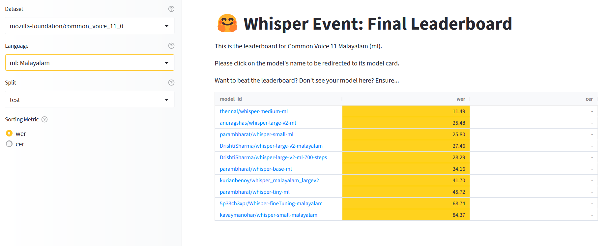
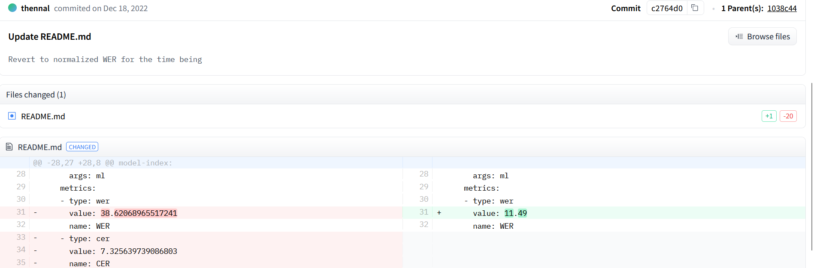

OpenAI Whisper’s amazing power to do fine-tuning demonstrated on Malayalam
Summit 2023 @ Indian Institute of Information Technology, Kottayam (IIIT-K)
Saturday, June 10, 2023
OpenAI Whisper
- I think Whisper1 is the most
under-rated model released by OpenAI.
- It was open-sourced on September 21, 2022 by releasing the inference code and pre-trained model weights.
About OpenAI Whisper Model
- Whisper is a computer program which can listen to people talking and write down what they say. (Automatic Speech Recognition Model)
- Whisper can understand people speaking different languages and can even translate what they say into English. (Supports transcription and translation to English)
Malayalam is a complex language
Whisper Event
- HuggingFace Team conducted a whisper fine tuning event for 2 weeks from 5th December 2022 to 19th December 2022. The results were out on 23rd December 2022.
- The goal was to to fine-tune the Whisper model to build state-of-the-art speech recognition systems in the languages of our choice üó£
Malayalam models produced in Whisper Event
- For the language Malayalam, the results are as follows:
Malayalam models performance in whisper event according to leaderboard
Winning models in Malayalam in Whisper Event
- The winning model for Common voice:
thennal/whisper-medium-ml
- The winning model for Fleurs:
parambharath/whisper-small-ml
I was not convinced
- Didn’t trust the Hugging Face way of evaluating models.

thennal/whisper-medium-ml model card readme
I was not convinced
- Didn’t trust the Hugging Face way of evaluating models.
Last commit in thennal/whisper-medium-ml
Objective of my benchmarking
- To test whether 10% WER was possible in available academic datasets.
Datasets
- Common Voice 11 malayalam subset
- SMC Malayalam Speech Corpus
Metrics for evaluating ASR models
- ASR evaulation relies on comparission between ground-truth and ASR output.
- Common metrics for ASR evaluation which are popular and good enough1 are :
1. Word Error Rate(WER)
2. Character Error Rate(CER)
I wanted to build something new

Time for a new adventure
Methadology for benchmarking
- Create as a python library so further whisper-based transformer models can be benchmark.
- Calculate WER, CER, model size and time taken to benchmark the model for the listed datasets.
- Build a reproducible approach, so results of benchmarking is stored as dataset.
Benchmarked models
- thennal/whisper-medium-ml
- parambharat/whisper-tiny-ml
- parambharat/whisper-base-ml
- parambharat/whisper-small-ml
- anuragshas/whisper-large-v2-ml
- DrishtiSharma/whisper-large-v2-malayalam
Results on benechmarking in Common Voice dataset

Output from benchmarking tool
WER in Common Voice dataset

Word Error Rate in Common Voice-9 test split
CER in Common Voice dataset

Character Error Rate in Common Voice-9 test split
Results on benechmarking in Malayalam Speech Corpus dataset

Output from benchmarking tool
WER in Malayalam Speech Corpus

Word Error Rate in MSC
CER in Malayalam Speech Corpus

Character Error rate in MSC
Links to Project
Github project
https://github.com/kurianbenoy/malayalam_asr_benchmarking
Links to Project
Benchmarking results
- Results on SMC Malayalam Speech corpus
https://huggingface.co/datasets/kurianbenoy/malayalam_msc_benchmarking/tree/main
- Results on Common Voice 11
https://huggingface.co/datasets/kurianbenoy/malayalam_common_voice_benchmarking
Future Ideas for Benchmarking
- Something very similar to OpenLLM Leaderboard with results of latest malayalam speech models.
- Should include results for Kaldi, Meta’s MMS, Wav2Vec etc.

Open LLM leaderboard in huggingface spaces
Conclusion
- In Malayalam we have achieved phenomenal results for fine tuned whisper models.
- The best model is:
thennal/whisper-medium-ml
- I think their seems to be a good ASR model suitable for production use-cases.
- You can also do it in your own language especially if it is a low resource language.